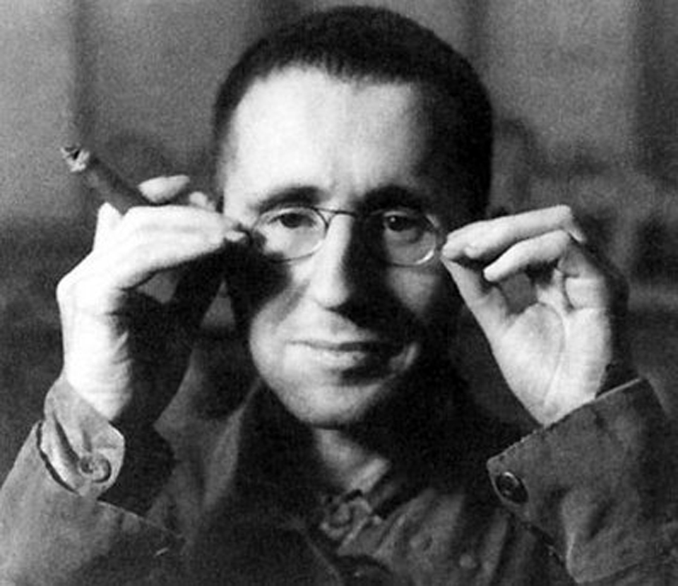

"Sí, no puede una tumbarse simplemente,
sí, hay que ser fría y sin corazón.
Sí, tantas cosas podrían suceder,
ay, la única respuesta posible: No.".
BERTOLT BRECHT, "La canción del sí y el no"
BERTOLT BRECHT
Reseña
BERTOLT BRECHT O LA VIDA EN EL TEATRO
El año que alumbró el descubrimiento del radio y la teoría neuronal, en el que tanto se perdió en Cuba y en Filipinas; el año del nacimiento de Rosa Chacel, Dámaso Alonso, García Lorca o Aleixandre, efeméride diletante de la historia cuya Guerra de los Mundos sumió al ecuménico espacio diminuto en un Yo acuso particular, el año, en fin de 1898, encumbró a otro de los Grandes, de los artistas que pasarían a engrosar el panteón de los inmortales: Eugen Berthold Friedrich Brecht, o más cómodamente Bertolt Brecht, padre del teatro épico.
Su vida estuvo plagada de sinsabores y patrias perdidas, dentro y fuera de la memoria. Aupó sobre sus hombros destinos infaustos y cargas tenaces, mientras su verso sangraba pobreza y desarraigo, notas constantes en su obra. Emigró de sí mismo y huyó de la guerra, pero la mantuvo dentro, viva, en su teatro. No pretendía moralizar sino exponer. Nada de surrealismo complejo ni subjetividad impuesta, su palabra era descriptiva, su acción la misma vida con tonos y formas alejados del oportunismo y la falacia. Una madre cargando bártulos que vendía enseres tras las líneas enemigas, la prostituta que tañe el corazón con la mano desgarrada o la familia avocada al desastre por las buenas intenciones. Distanciado, alejado de la influencia que el teatro poseía, experimenta con las ideas como motores y deja al espectador la libertad de pensar por sí mismo en lo que está viendo. La crítica social es mordaz pues el mundo que le ampara es grotesco y absurdo. No hay lugar para la relajación de los valores ni la elevación mística. El texto se examina con precisión quirúrgica, las palabras dejan de elevarse pletóricas hacia el cielo y las trae de nuevo al barro, donde se hienden las raíces. Bertolt es, ante todo, un poeta de tierra húmeda y un cantante silencioso. La música en su obra interrumpe, evade sentimentalismos, acerca el peligro de verse envueltos en una neblinosa sensación de bienestar: es rápida, vibrante, profunda. Sus actores son alumnos que crean y se destruyen, que hablan y se silencian, que otorgan vida a través de la muerte. Y será la muerte, la trascendencia ante su innegable dominio lo que haga de Brecht leyenda.
Nació en el estado de Baviera en una familia burguesa, de padre católico y madre protestante. Ya desde muy joven manifestó inclinaciones rebeldes, antiautoritarias y extravagantes que le condujeron a la publicación juvenil de poesías, reportajes y ensayos, marcados por el patriotismo que producía la Gran Guerra. Ahora bien, una vez esa tendencia se vio manifestada en los demás, la abandonó para buscar una reconciliación con su alma pacífica. Así, acaba por desmembrarse de la idea de nación espartana y comienza su andadura por el anti-belicismo, también presa de su carácter espiritual y la influencia de su abuela.
Estudia medicina pero la medicina no le estudia a él. Su traslado a Berlín coincide con el primer drama teatral Baal, poeta y asesino. Las vanguardias le atraen, el escenario hace temblar sus miembros como un tintineo flamígero de ascuas en la oscuridad que se cierne sobre el mundo. Tiene un hijo que sucumbirá en el frente, años después. Escribe con tesón, ahonda en la profundidad del teatro, expresa su añoranza de una fértil sociedad y estudia con ahínco el socialismo al cual no termina de adherirse por su natural comportamiento desarraigado. Pero es ahí donde recurre la justicia social: la explotación, la desigualdad y la pobreza harán dignos blasones en la lucha inhumana que le pesa. No habrá más imparcialidad.
Los Tambores sacuden el proscenio, levantan el telón del mundo y agitan las voces silenciosas; ¡qué belleza la lucha obrera y la revolución! Gritarán entusiasmados con sus apologías comunistas los seguidores menos acérrimos de la emancipación proletaria, mientras desconfían los teólogos del realismo socialista. Y a los veintinueve años, publica la mayor de las obras de su tiempo, un compendio del sufrimiento humano, un retrato de la marginalidad humana y las luces que emergen del olvido: La ópera de los tres centavos.
Numerosas obras siguen a esta hasta que se ve perseguido por el nazismo que comienza su andadura. Huye entonces de su tierra para no regresar en quince años. Viaja a Escandinavia y se impregna del mar del norte que rompe acantilados y ahoga la bruma del crepúsculo. Desde allí parte a Moscú y el transiberiano le impulsa a través de la estepa. Árido, su corazón se debate entre la poesía y el teatro, el existencialismo bulle, la segunda guerra hará olvidar la desesperación de la primera. Vladivostok y emigra a California, donde espera algo de paz entre tanta vorágine desoladora. Escribe, estrena, el éxito le es esquivo a medias, en tanto es un paria sin tierra. Incluso en el Oeste, la suerte le es adversa. Al poco de terminar la guerra, el macartismo comienza su caza de brujas. Es, de nuevo, expulsado con deshonor. Viaja a Suiza, llora por el destino del mundo: Antígona y el Pequeño Organum, La vida de Galileo que aún pende de un hilo… todo le lleva invariablemente a su destino final: la vuelta a casa.
Berlín Este ha cambiado. El mundo entero ha cambiado, pero él sigue indómito en su lucha personal. Hay que sacudir el tedio, romper el hálito inconforme, devolver las tablas de la ley a las tablas del escenario. Estrena, dirige, produce y escribe. Incluso llega a recibir a el Premio Stalin de la Paz, dos años antes de su extraña muerte.
En 1956 fallece de una trombosis coronaria provocada por una inflamación del pulmón que se complica. Aun así, habrá quien dirá que la Stasi tuvo algo que ver con su tragedia. Hasta el final, el que fuera un joven rebelde pretendía denunciar la corrupción dentro la policía secreta de la RDA. Murió entonces como un héroe de sí mismo. Pero su legado permanece en versos de mares tumultuosos, en la sangre que derrama la niña que sujeta firme su peluche entre las bombas, en las flores que recogen las hilanderas con la espalda curva, en el labio partido de la prostituta, en la cárcel, en el exilio, en la muerte. Y así les otorga Vida.
Ese es su legado. Y el nuestro.
Poemas
CONTRA LA SEDUCCIÓN
No os dejéis seducir:
no hay retorno alguno.
El día está a las puertas,
hay ya viento nocturno:
no vendrá otra mañana.
No os dejéis engañar
con que la vida es poco.
Bebedla a grandes tragos
porque no os bastará
cuando hayáis de perderla.
No os dejéis consolar.
Vuestro tiempo no es mucho.
El lodo, a los podridos.
La vida es lo más grande:
perderla es perder todo.
Bertolt Brecht, 1925.